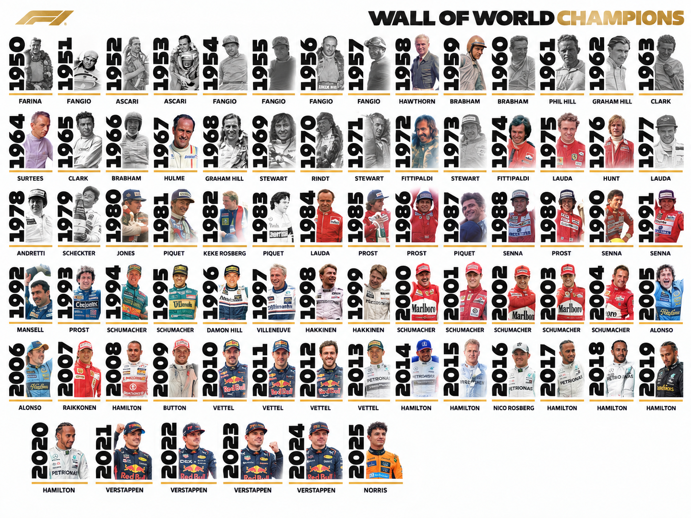

Los campeones del mundo
Desde que Giuseppe “Nino” Farina conquistó el primer Campeonato Mundial en 1950 hasta la consagración de Lando Norris en 2025, un total de 35 pilotos diferentes alcanzaron el título máximo de la Fórmula 1. Cada uno representa una etapa particular de la categoría:desde los arriesgados Grandes Premios de los años cincuenta hasta una actualidad marcada por la tecnología, la estrategia y una preparación cada vez más profesional.
De Fangio a las primeras grandes figuras
Durante las primeras décadas aparecieron algunos de los nombres que ayudaron a construir la historia del campeonato. Juan Manuel Fangio dominó buena parte de los años cincuenta y estableció una referencia que perduraríadurante décadas. Más tarde surgieron campeones como Jim Clark, Jack Brabham, Jackie Stewart y Niki Lauda,protagonistas de épocas en las que los autos evolucionaban rápidamente pero los pilotos todavía competían en condiciones mucho más peligrosas que las actuales.Brabham alcanzó además un logro excepcional en 1966: fue campeón conduciendo un automóvil construido por su propio equipo.
Rivalidades y épocas de dominio
Con el crecimiento de la categoría, el campeonato comenzó a estar marcado por grandes rivalidades y períodos de dominio. Los enfrentamientos entre Alain Prost y Ayrton Senna definieron buena parte de finales de los años ochenta y comienzos de los noventa. Posteriormente, Michael Schumacher encabezó junto a Ferrari uno de los ciclos más exitosos de la historia, mientras que décadas más tarde Lewis Hamilton hizo lo propio durante el período de dominio de Mercedes. También hubo etapas protagonizadas por campeones consecutivos como Sebastian Vettel y Max Verstappen.
Sin embargo, la historia del campeonato no está formada solamente por largas dinastías. Pilotos como James Hunt, Nigel Mansell, Kimi Räikkönen, Jenson Button y Nico Rosberg consiguieron alcanzar la cima en temporadas que quedaron especialmente asociadas a sus nombres. El caso más singular es el de Jochen Rindt, quien en 1970 se convirtió en el único piloto proclamado campeón mundial de Fórmula 1 de manera póstuma, después de perder la vida durante los entrenamientos del Gran Premio de Italia.
Una historia que continúa
La galería de campeones refleja también la transformación de la propia Fórmula 1. Pilotos de distintas generaciones y nacionalidades compitieron con reglamentos, tecnologías y niveles de seguridad muy diferentes, pero todos compartieron el mismo objetivo: terminar una temporada como campeón mundial de pilotos. La siguiente imagen recorre cronológicamente a los ganadores de cada campeonato entre 1950 y 2025, mostrando cómo esos nombres fueron sucediéndose a lo largo de más de siete décadas de competición.

Medallero histórico de campeones
Ranking de campeones mundiales ordenado por cantidad de títulos y, en caso de igualdad, por cantidad de Grandes Premios ganados. Estadísticas actualizadas al cierre de la temporada 2025.
| Posición | Piloto | Nacionalidad | Campeonatos | Carreras ganadas |
|---|---|---|---|---|
| 1.º | Lewis Hamilton |
 Reino Unido Reino Unido
|
7 | 105 |
| 2.º | Michael Schumacher |
 Alemania Alemania
|
7 | 91 |
| 3.º | Juan Manuel Fangio |
 Argentina Argentina
|
5 | 24 |
| 4.º | Max Verstappen |
 Países Bajos Países Bajos
|
4 | 71 |
| 5.º | Sebastian Vettel |
Alemania
|
4 | 53 |
| 6.º | Alain Prost |
 Francia Francia
|
4 | 51 |
| 7.º | Ayrton Senna |
 Brasil Brasil
|
3 | 41 |
| 8.º | Jackie Stewart |
Reino Unido
|
3 | 27 |
| 9.º | Niki Lauda |
 Austria Austria
|
3 | 25 |
| 10.º | Nelson Piquet |
Brasil
|
3 | 23 |
| 11.º | Jack Brabham |
 Australia Australia
|
3 | 14 |
| 12.º | Fernando Alonso |
 España España
|
2 | 32 |
| 13.º | Jim Clark |
Reino Unido
|
2 | 25 |
| 14.º | Mika Häkkinen |
 Finlandia Finlandia
|
2 | 20 |
| 15.º | Graham Hill |
Reino Unido
|
2 | 14 |
| 15.º | Emerson Fittipaldi |
Brasil
|
2 | 14 |
| 17.º | Alberto Ascari |
 Italia Italia
|
2 | 13 |
| 18.º | Nigel Mansell |
Reino Unido
|
1 | 31 |
| 19.º | Nico Rosberg |
Alemania
|
1 | 23 |
| 20.º | Damon Hill |
Reino Unido
|
1 | 22 |
| 21.º | Kimi Räikkönen |
Finlandia
|
1 | 21 |
| 22.º | Jenson Button |
Reino Unido
|
1 | 15 |
| 23.º | Alan Jones |
Australia
|
1 | 12 |
| 23.º | Mario Andretti |
 Estados Unidos Estados Unidos
|
1 | 12 |
| 25.º | Jacques Villeneuve |
 Canadá Canadá
|
1 | 11 |
| 25.º | Lando Norris |
Reino Unido
|
1 | 11 |
| 27.º | James Hunt |
Reino Unido
|
1 | 10 |
| 27.º | Jody Scheckter |
 Sudáfrica Sudáfrica
|
1 | 10 |
| 29.º | Denny Hulme |
 Nueva Zelanda Nueva Zelanda
|
1 | 8 |
| 30.º | John Surtees |
Reino Unido
|
1 | 6 |
| 30.º | Jochen Rindt |
Austria
|
1 | 6 |
| 32.º | Giuseppe Farina |
Italia
|
1 | 5 |
| 32.º | Keke Rosberg |
Finlandia
|
1 | 5 |
| 34.º | Mike Hawthorn |
Reino Unido
|
1 | 3 |
| 34.º | Phil Hill |
Estados Unidos
|
1 | 3 |